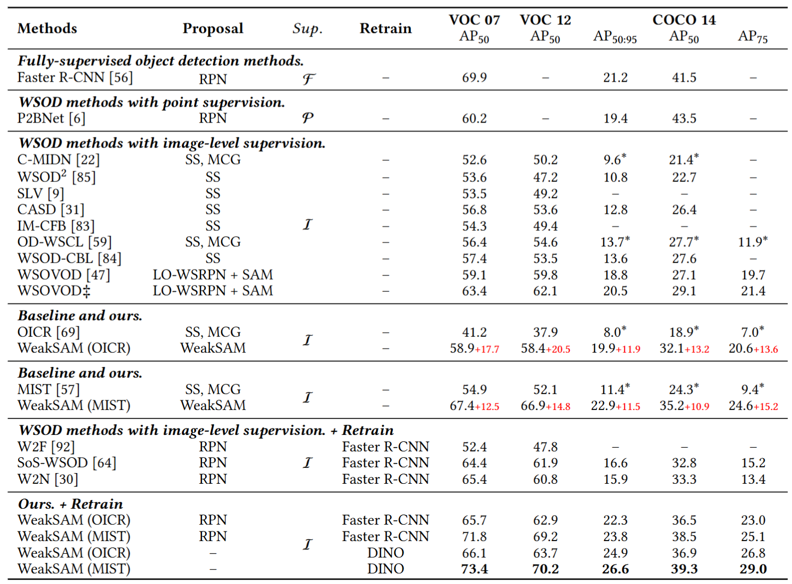
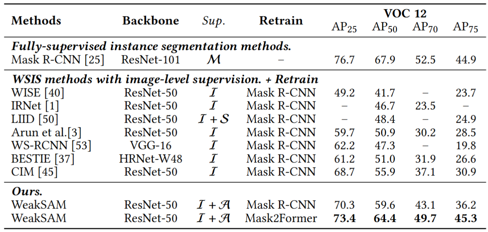
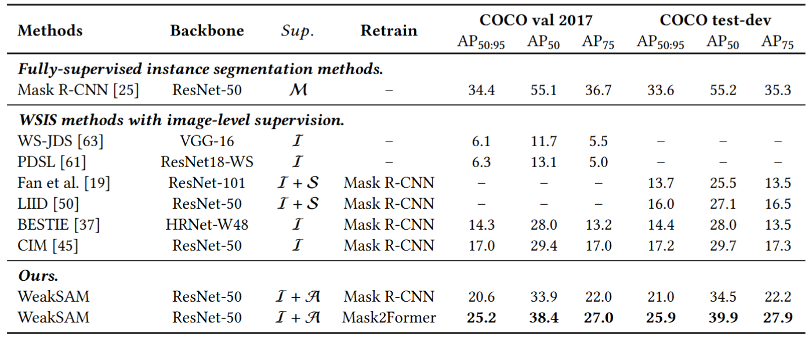
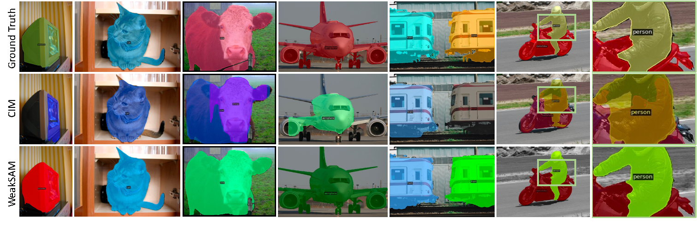
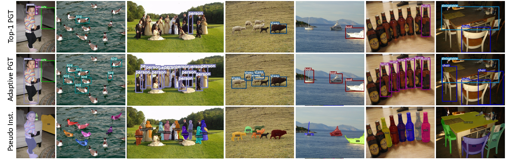
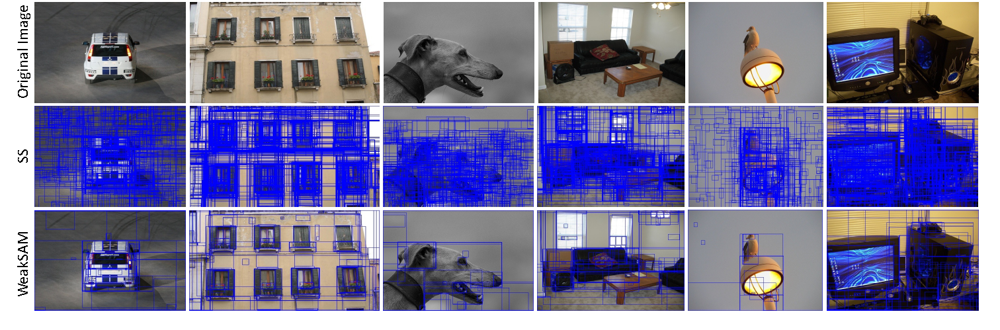

Weakly supervised visual recognition using inexact supervision is a critical yet challenging learning problem. It significantly reduces human labeling costs and traditionally relies on multiinstance learning and pseudo-labeling. This paper introduces WeakSAM and solves the weaklysupervised object detection (WSOD) and segmentation by utilizing the pre-learned world knowledge contained in a vision foundation model, i.e., the Segment Anything Model (SAM). WeakSAM addresses two critical limitations in traditional WSOD retraining, i.e., pseudo ground truth (PGT) incompleteness and noisy PGT instances, through adaptive PGT generation and Region of Interest (RoI) drop regularization. It also addresses the SAM’s problems of requiring prompts and category unawareness for automatic object detection and segmentation. Our results indicate that WeakSAM significantly surpasses previous state-of-the-art methods in WSOD and WSIS benchmarks with large margins, i.e. average improvements of 7.4% and 8.5%, respectively.
This figure shows the cosine similarity among the features of proposals, i.e., Left for Selective Search proposals and Right for WeakSAM-proposals. For a single image from PASCAL VOC 2007, we randomly sampled 200 proposal features to calculate their similarity. This suggests that the usually used proposal set in WSOD show great redundancy, which hinders the optimization process of WSOD models.
The figures below show the relationship between the normalized classification and regression loss, the corresponding number of RoIs, and the corresponding error rate. The results are obtained from training the Faster-RCNN using PGT in the preliminary training stage.
An overview of the proposed WeakSAM framework. We first generate activation maps from a classification ViT. Subsequently, we introduce classification clues and spatial points as automatic WeakSAM prompts, which address the problem of SAM requiring interactive prompts. Next, we use the WeakSAM proposals in the WSOD pipeline, in which the weakly-supervised detector performs class-aware perception to annotate pseudo ground truth (PGT). Then, we analyze the incompleteness and the noise problem existing in PGT and propose adaptive PGT generation, RoI drop regularization to address them, respectively. Finally, we launch WSIS training supervised by pseudo instance labels, which requires adaptive PGT as SAM prompts. The snowflake mark means the model is frozen.
We evaluate the proposed WeakSAM on both weakly-supervised object detection (WSOD) and weakly-supervised instance segmentation (WSIS) benchmarks. Notably, the same datasets for different tasks may have different settings. For WSOD, we use three datasets, i.e., PASCAL VOC 2007, PASCAL VOC 2012, and COCO 2014..
Comparisons of the WSOD performance in terms of AP metrics on three benchmarks: PASCAL VOC 2007, PASCAL VOC 2012, and COCO 2014. The Sup. column denotes the type of supervision used for training including full supervision (F), point-level labels (P), image-level labels (I). “*” means the results rely on MCG proposals. “‡” means this method use the a heavy RN50-WS-MRRP backbone (1.76 × parameters than VGG16 and 10.10 × parameters than RN50). We mark the best WSOD results in bold.
Comparisons of the WSIS performance in terms of AP metrics on PASCAL VOC 2012. The Sup. column denotes the type of supervision used for training including mask supervision (M), saliency maps (S), image-level labels (I), and SAM models (A). We mark the best WSIS results in bold.
Comparisons of the WSOD performance in terms of AP metrics on three benchmarks: PASCAL VOC 2007, PASCAL VOC 2012, and COCO 2014. The Sup. column denotes the type of supervision used for training including full supervision (F), point-level labels (P), image-level labels (I). “*” means the results rely on MCG proposals. “‡” means this method use the a heavy RN50-WS-MRRP backbone (1.76 × parameters than VGG16 and 10.10 × parameters than RN50). We mark the best WSOD results in bold.
Some visualization results of our WeakSAM.
Visualization of the weakly-supervised object detection on the PASCAL VOC 2007 test set.
Visualization of the weakly-supervised instance segmentation on the PASCAL VOC 2012 val set.
Visualization of the pseudo ground truth boxes and pseudo instance labels on the PASCAL VOC 2012 trainaug set.
Visualization of the Selective Search and WeakSAM proposals boxes on the PASCAL VOC 2007 trainval set.

@misc{zhu2024weaksamsegmentmeetsweaklysupervised,
title={WeakSAM: Segment Anything Meets Weakly-supervised Instance-level Recognition},
author={Lianghui Zhu and Junwei Zhou and Yan Liu and Xin Hao and Wenyu Liu and Xinggang Wang},
year={2024},
eprint={2402.14812},
archivePrefix={arXiv},
primaryClass={cs.CV},
url={https://arxiv.org/abs/2402.14812},
}